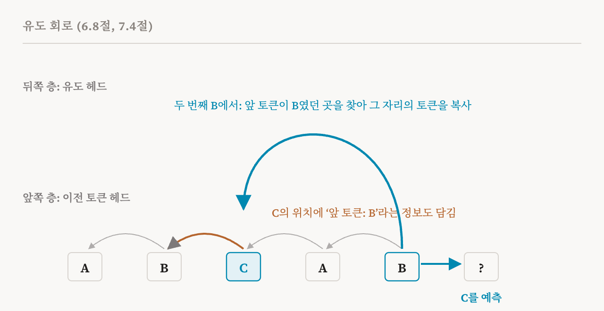
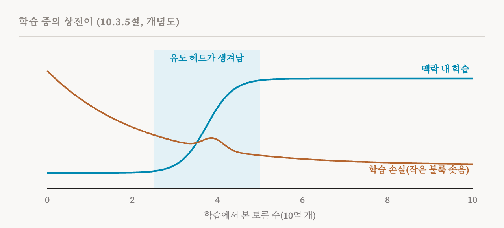

이번 편은 다른 편들과 다릅니다. 이 책의 한 절을 따라가는 대신, 이 책이 세 곳에 나누어 들려주는 사례 연구를 한데 모읍니다. 특징에 관한 장(6.8절, 47–48쪽), 회로에 관한 장(7.4절, 58쪽), 그리고 학습 과정에 관한 장(10.3.5절, 90쪽)입니다. 주제는 유도 헤드(induction head)로, 언어 모델에서 아마 가장 잘 이해된 메커니즘입니다. 하나의 메커니즘을 세 렌즈로 보는 것은 지난 열다섯 편이 쌓아 온 것을 되짚고, 렌즈마다 무엇을 보태는지 보기에 좋은 방법입니다.
유도 헤드가 하는 일
유도 헤드는 2021년에 작은 트랜스포머에서 처음 발견되었고, 2022년에 깊이 분석되었습니다. 반복되는 시퀀스에 대해 조건부 복사 규칙을 구현하는 어텐션 헤드입니다. 쉽게 말하면 이렇습니다. 지금 토큰이 텍스트 앞부분에도 나왔다면, 지난번에 바로 뒤에 무엇이 왔는지 보고 그것을 다시 예측한다.
이 책의 예는 시퀀스 A B C A B입니다. 모델은 두 번째 B 다음에 무엇이 올지 예측해야 합니다. 모델은 앞에서 'A B'를 보았고, 그 뒤에는 C가 왔습니다. 두 번째 B에 있는 유도 헤드는 첫 번째 B 바로 뒤의 위치, 곧 C가 있는 위치를 돌아보고, 모델이 C에 주는 점수를 높입니다. 이 규칙은 어떤 토큰, 어떤 위치에서든 통해야 합니다. '해리 포터 … 해리'는 '포터'를 예측합니다. 프로그램 앞부분에 쓰인 변수 이름은 같은 이어짐을 예측합니다.
이 단순한 규칙이 중요한 이유는, 맥락 내 학습의 기본적인 형태이기 때문입니다. 무엇이 다음에 올지 정하는 데 가중치에 저장된 무언가가 아니라 눈앞의 텍스트를 쓰는 것입니다.
회로의 관점
첫 번째 렌즈는 6편의 회로입니다. 이 책은 놓치기 쉬운 점을 하나 짚습니다. 유도 헤드는 이 일을 혼자서 할 수 없습니다. C에 주의를 기울이려면 '앞 토큰이 B였던 위치'를 찾을 방법이 필요합니다. 그런데 각 위치의 잔차 스트림은 처음에는 자기 토큰만 담고 있습니다. C의 위치에는 그 앞에 B가 왔다는 것을 알려 주는 것이 아무것도 없습니다.
그 정보는 앞쪽 층에 있는 다른 헤드가 마련합니다. 어텐션만 있는 두 층짜리 트랜스포머를 연구한 2021년 연구는 이를 이전 토큰 헤드(previous-token head)라고 불렀습니다. 이 헤드는 각 위치에서 바로 앞 위치에 주의를 기울이고, 그 토큰의 정보를 잔차 스트림에 써 넣습니다. 이 헤드가 실행되고 나면 C의 위치에 B의 흔적이 담깁니다. 이제 두 번째 B에 있는 유도 헤드는 이전 토큰 정보가 B와 맞는 위치를 찾아 C를 발견하고, 그것을 예측으로 복사할 수 있습니다. 서로 다른 층에 있는 두 헤드가, 4편에서 설명한 대로 잔차 스트림을 통해 소통하며 유도 회로를 이룹니다. 두 층짜리 모델에서는 이 한 쌍만으로 그 행동을 만들어 내기에 충분합니다.

이 책은 증거를 나열합니다. 유도 헤드를 제거하는 실험은, 어텐션만 있는 모델에서 유도 헤드가 맥락 내 학습을 인과적으로 떠받친다는 것을 보였습니다. 18편의 필요성 시험입니다. 회로 분석은 유도 헤드가 앞쪽의 이전 토큰 헤드에 기댄다는 것을 보였습니다. 그리고 곧 보겠지만, 유도 헤드는 학습 중에 갑자기 나타나며, 그때 맥락 내 학습 능력도 가파르게 좋아집니다.
층이 더 많고 MLP도 있는 더 큰 모델에서는 메커니즘이 더 복잡해집니다. 하지만 이 책은 핵심 원리는 같다고 봅니다. 맥락이 층을 거쳐 앞으로 전달되고, 반복된 부분 시퀀스와의 일치에 따라 조건부로 토큰을 꺼내 오는 데 쓰인다는 것입니다.
특징의 관점
두 번째 렌즈는 10편부터 13편까지의 특징 분석입니다. 유도 헤드는 원래 특정한 어텐션 헤드, 곧 구성 요소로 기술되었습니다. 이후의 연구는 이 계산을 분산된 표현의 수준에서 이해하는 것이 더 자연스럽다고 봅니다.
희소 오토인코더는 잔차 스트림이나 MLP뿐 아니라 어텐션 층의 출력에도 학습시킬 수 있습니다. 그렇게 한 2024년의 한 연구는 되풀이되는 패턴과 맥락 의존성을 포착하는 특징의 묶음들을 찾았고, 그 가운데 일부는 원래 유도 헤드가 한다고 여겨지던 행동과 맞아떨어졌습니다. 더 넓게 보면, 최근의 분석들은 유도 헤드가 고립된 메커니즘이 아니라, 서로 작용하는 여러 특징이 층을 넘나들며 되풀이되고 결합하는 분산된 특징 회로에 참여한다고 봅니다. 13편의 크로스코더 같은 층간 방법은 일부 특징이 층마다 새로 계산되는 것이 아니라 여러 층에 걸쳐 일관되게 표현된다는 것을 시사합니다.
이 책이 여기서 끌어내는 교훈은 분석 단위에 대한 주의입니다. 어텐션 헤드는, 유도 헤드처럼 특화된 것이라도, 더 넓은 분산 표현의 일부일 뿐일 수 있습니다. 어떤 헤드를 '유도 헤드'라고 부르는 것은 쓸모가 있지만, 그 헤드가 참여하는 계산은 그 헤드의 경계에서 멈추지 않을 수 있습니다.
학습 과정의 관점
세 번째 렌즈는 모델이 어떻게 배우는지에 관한 이 책의 장(26–28편에서 다룹니다)에서 온 것으로, 완성된 모델이 아니라 학습 전체에 걸쳐 모델을 봅니다. 유도 회로에 관한 몇몇 사실은 학습이 끝난 모델 하나에서는 보이지 않고, 학습 도중 차례로 저장한 모델의 사본, 곧 체크포인트(checkpoint)들을 함께 볼 때만 보입니다.
시퀀스 A B C A B를 두고 학습 한 번을 지켜봅시다. 초기의 체크포인트에서 모델은 토큰이 대체로 얼마나 자주 나오는지로 예측하고, 앞에 나온 A B에서 아무 도움도 얻지 못합니다. 그러다 학습의 좁은 구간, 2022년 연구가 다룬 모델들에서는 학습을 시작한 지 약 25억에서 50억 토큰 사이에, 유도 헤드가 생겨나고 모델은 첫 번째 등장을 돌아보며 C를 예측하기 시작합니다. 같은 구간에서 맥락 내 학습이 가파르게 좋아집니다. 학습 손실은 작게 불룩 솟습니다. 이 능력은 서서히가 아니라 갑자기 생겨나며, 이를 상전이(phase change)라고 부릅니다.

이 시점은 체크포인트 하나로는 줄 수 없는 종류의 인과적 증거도 보탭니다. 완성된 모델에서 유도 헤드를 제거하는 것은 그 모델에서 그 헤드가 그 행동에 필요하다는 것만 보여 줍니다. 유도 회로가 생겨난 것이 그 능력을 생기게 했다는 더 강한 주장은 보여 주지 못합니다. 2022년 연구는 회로가 생겨나는 과정 자체에 개입해서 이 주장을 시험했습니다. 이른바 '번진 키(smeared key)' 변형은 이전 토큰 단계를 어텐션 계산 자체에 넣어서, 회로 전체가 층 하나 안에서 생겨날 수 있게 했습니다. 이렇게 바꾸자, 원래는 맥락 내 학습을 결코 익히지 못하던 한 층짜리 모델이 그 능력을 얻었고, 더 깊은 모델에서는 전이가 더 일찍 일어났습니다. 회로가 생길 수 있는 시점을 바꾸자, 능력이 나타나는 시점도 바뀐 것입니다.
세 렌즈, 세 종류의 주장
나란히 놓고 보면 세 관점은 서로 다른 것을 말하고, 저마다 한계가 있습니다.
| 렌즈 | 이 책의 절 | 보여 주는 것 | 혼자서는 보여 주지 못하는 것 |
|---|---|---|---|
| 회로 | 7.4 | 어떤 구성 요소가 그 행동을 구현하고 서로 어떻게 기대는지 | 그 구성 요소가 자연스러운 단위인지, 회로가 어떻게 생겨났는지 |
| 특징 | 6.8 | 계산이 여러 층에 걸친 상호작용하는 특징들에 퍼져 있다는 것 | 개입 없이는, 그 특징들 가운데 무엇이 필요하거나 충분한지 |
| 학습 과정 | 10.3.5 | 메커니즘이 언제 생겨나는지, 그리고 그것이 생겨나는 것이 능력을 낳는다는 것 | 다른 두 렌즈 없이는, 그 메커니즘이 정확히 무엇을 계산하는지 |
회로의 관점은 선명한 메커니즘을 줍니다. 특징의 관점은 메커니즘이 그 안에 이름 붙은 구성 요소보다 넓을 수 있다고 경고합니다. 발달의 관점은 회로가 생길 수 있는 시점을 바꿔서, 시간상의 상관관계를 인과적 증거로 바꿉니다. 어느 렌즈 하나로도 전체를 얻을 수 없었을 것이고, 이것은 이 분야 전체에 대한 이 책의 태도를 잘 요약해 줍니다.
| 용어 | 뜻 |
|---|---|
| 유도 헤드 | 지금 토큰이 앞에 나온 적이 있으면, 지난번 그 뒤에 온 토큰을 예측하는 어텐션 헤드 |
| 조건부 복사 | 앞에서 맞는 맥락을 찾았을 때만 토큰을 복사하는 것 |
| 이전 토큰 헤드 | 각 토큰이 무엇인지를 다음 위치에 써 넣는 어텐션 헤드 |
| 유도 회로 | 함께 일하는 이전 토큰 헤드와, 그보다 뒤쪽 층의 유도 헤드 |
| 어텐션만 있는 트랜스포머 | 어텐션만 따로 연구하려고 MLP 층을 뺀 작은 트랜스포머 |
| 체크포인트 | 학습 도중 어느 시점에 저장한 모델의 사본 |
| 상전이 | 학습의 좁은 구간에서 능력이 갑자기 나타나는 것 |
| 번진 키 | 이전 토큰 단계를 어텐션에 넣어, 회로가 층 하나 안에서 생겨날 수 있게 한 변형 |
20편에서는 회로 부를 마무리합니다. 어떤 해석 주장이든 판단할 수 있도록 이 책이 제안하는 다섯 차원과, 그 지표와 절차입니다.